|
|
|
|
Отличительной особенностью британского блюза по сравнению с американским является то, что он, по существу, является частью рок-музыки, не случайно записи многих легенд британского блюза продаются в отделах именно рок-музыки музыкальных магазинов, а справочные материалы о них содержатся в рок-энциклопедиях. Расцвет британского блюза практически совпал с пиком развития классического рока: это были 60-е – начало 70-х годов. В ряде случаев достаточно сложно провести четкую грань стилистической принадлежности той или иной группы или исполнителя. Не претендуя на всеобъемлемость, цель этой статьи – обозначить основные тенденции развития британского блюза в историческом и культурном аспектах, а также кратко охарактеризовать творчество основных исполнителей данной музыки.
Британский блюз (или, как его первоначально называли, ритм-энд-блюз1) стал складываться в Лондоне еще в конце 50-х гг. Основных причин формирования интереса к подобной музыке было две. Во-первых, нежелание британской молодежи послевоенного поколения следовать устаревшим нормам викторианской морали, жить по правилам "стариков". Во-вторых, интерес к американской культуре, в первую очередь, к блюзу и рок-н-роллу, сформированный как путем прослушивания привозившихся из-за океана пластинок, так и гастролями американских исполнителей. Не в последнюю очередь, он был подогрет и негодующими выступлениями представителей старшего поколения: от школьных учителей и священников до врачей-психиатров.
1Сам термин "Rhythm & Blues" впервые появился в журнале "Billboard" в 1949 г., первоначально обозначая исполнявшийся черными музыкантами электрифицированный городской блюз. В настоящее время R'n'B является разновидностью поп-музыки и к блюзу особого отношения не имеет.
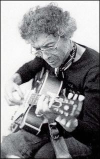
На формирование британского блюза на ранней стадии его развития решающее влияние оказали Алексис Корнер (Alexis Korner) и Сирил Дэйвис (Cyril Davis), в самом начале 60-х организовавшие "Blues Incorporated", первую профессиональную британскую блюзовую группу. Состав ансамбля постоянно менялся, через его школу прошли многие звезды английской рок-музыки, включая Эрика Клэптона, Мика Джагера (Mick Jagger), Джека Брюса (Jack Bruce), Джинджера Бейкера (Ginger Baker) и других. В июне 1962 г. группа записала первый альбом белого блюза "R&B from the Marquee". Диск не имел особого коммерческого успеха, что было вызвано не недостатками самого материала, а скорее неподготовленностью массовой публики к подобной музыке. В любом случае, это знаковая работа, своего рода точка отсчета развития британского блюза в целом. Вскоре из-за творческих разногласий Корнер с Дэйвисом расстаются, обозначая два разных направления раннего британского блюза. Корнер пошел на более тесный синтез блюза с современным джазом, исполняя довольно элитарную музыку. Впоследствии это направление прослеживается в творчестве саксофониста и органиста Грэма Бонда (Graham Bond). Хорошую возможность ознакомиться с тем разнообразием музыки, которую исполнял Корнер, дает двойной компилятивный альбом "Bootleg Him!" (1972 г.), составленный Корнером из нереализованных записей с такими звездами, как Джек Брюс, Джинджер Бейкер, Грэм Бонд, Дик Хексталь-Смит (Dick Heckstall Smith), Роберт Плант (Rober Plant) и другими.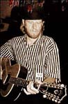
Сирил Дэйвис взял за образец блюз послевоенного Чикаго, однако из-за его преждевременной смерти от острой лейкемии это направление не получило дальнейшего развития. Наследовавший его группу певец Джон Болдри (John Baldry) довольно быстро переориентировался на исполнение соул-музыки. Другим ярким представителем соул-направления британского блюза был певец и пианист Джордж Фэйм (Georgie Fame) со своей группой "Blue Flames" в сентябре 1962 г. возглавивший рейтинг самых "горячих" лондонских клубных групп.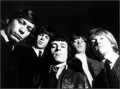
Однако магистральное направление британского ритм-энд-блюза было связано с творчеством таких групп, как "Rolling Stones", "Yardbirds" и "Animals". Образованные в 1962 г. певцом Миком Джаггером, гитаристами Кейтом Ричардсом (Keith Richards) и Брайаном Джонсом (Brian Jones), ударником Чарли Уоттсом (Charlie Watts), "Rolling Stones" за полтора года стали национальными кумирами британской молодежи, составив конкуренцию "Beatles". Группа названа в честь известного блюза Мадди Уотерса (Muddy Waters) и первоначально была направлена на исполнение именно "черной" музыки: от жесткого электрического блюза до рок-н-ролла и соула. Существенную роль в стремительном взлете популярности "роллингов" сыграла и достаточно агрессивная раскрутка, проводившаяся менеджментом группы, сделавшим ставку на имидже "плохих парней".В дальнейшем группа существенно эволюционировала, экспериментируя как с музыкальными жанрами и стилями, так и с различными психоактивными веществами, долгое время оставаясь героями скандальной хроники. Тем не менее "роллинги" на начальном этапе своей карьеры внесли существенный вклад в популяризацию блюза среди молодой белой аудитории не только в Британии, но и, как ни странно, в Соединенных Штатах. Дело в том, что всплеск интереса к ритм-энд-блюзу в Америке пришелся на 50-е годы, и как любая другая мода, через несколько лет практически сошел на нет. Следующая волна увлечения блюзом в США не в последнюю очередь была связана с т.н. "британским вторжением", когда записи английских рок-групп, исполнявших в том числе и блюз, в середине 60-х оказались в первых строчках американских хит-парадов. Именно от британских сверстников большая часть белой американской молодежи тогда узнала кто такие были Мадди Уотерс, Джон Ли Хукер (John Lee Hooker), Хаулин Вулф (Howlin' Wolf). Блюзовых альбомов в чистом виде "Rolling Stones" никогда не записывали, однако для знакомства с ранним британским ритм-энд-блюзом идеально подходит их дебютная пластинка 1964 г. "The Rolling Stones" (американское название – "England’s Newest Hit Makers"), в свое время имевшая эффект разорвавшейся бомбы, вытеснив с первой позиции в британских чартах второй альбом "Beatles". Среди более поздних альбомов, записанных в блюз-роковом ключе целесообразно обратить внимание на "Beggars Banquet" (1968 г.) и "Sticky Fingers" (1971 г.).
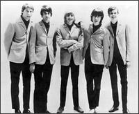
В отношении "Yardbirds" стоит отметить, что уникальность этой группы состояла в том, что в ней последовательно играли выдающиеся британские рок-гитаристы – Эрик Клэптон, Джефф Бек (Jeff Beck) и Джимми Пейдж (Jimmy Page). В отличие от "роллингов", исполнявших более коммерческую музыку, "Yardbirds" были пионерами прогрессивного гитарного блюза, причем это была одна из первых групп, показавших, что рок-музыка может быть чем-то большим, чем фоном для танцев или выражением молодежного протеста. Что касается истерии, которая в то время сопровождала клубные выступления английских блюзовых групп, то ее пример запечатлен в фильме Микеланджело Антониони "Фотоувеличение", когда на концерте тех же "Yardbirds" Джефф Бек разбивает гитару и кидает обломки в толпу, в которой тут же начинается свалка. Герою фильма везет – он выхватывает кусок грифа гитары и выбегает с ним на улицу, чтобы тут же выбросить свой трофей за полной ненадобностью. Среди выпущенных группой альбомов, в первую очередь, стоит обратить внимание на концертный "Five Live Yardbirds" (1964 г.) c Эриком Клэптоном и студийный "Roger the Engineer" (1966 г.) с Джеффом Беком, демонстрирующий сочетание блюза и психоделии.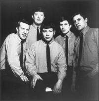
Не менее интересной группой раннего британского ритм-энд-блюза были и "Animals" во главе с певцом Эриком Бердоном (Eric Burdon) и органистом Аланом Прайсом (Alan Price). В пору своего расцвета в 1964г. группа буквально "дышала в затылок" "Rolling Stones", а их версия "House of the Rising Sun" штурмовала вершины хит-парадов по обе стороны Атлантики. Как и у других британских-ритм-энд-блюзовых групп, наряду с исполнением рок-н-роллов и электрического блюза, в репертуаре "Animals" не последнее место занимали и просто поп-песни. Наиболее интересными для первоначального ознакомления являются два первых диска группы – "The Animals" (1964 г.) и "Animal Tracks" (1965 г.).Каким образом оценивались герои британского ритм-энд-блюза за океаном со стороны самих американских блюзменов? Когда "роллинги" во время своего первого американского турне приехали в США и записались в легендарной чикагской студии Chess, они были вполне доброжелательно встречены присутствовавшими там мастерами, в первую очередь, Мадди Уотерсом. С другой стороны, гастролировавший в то же время в Великобритании Сонни Бой Уильямсон (Sonny Boy Williamson) хоть и записал пару концертных альбомов в сопровождении "Yardbirds" и "Animals", был весьма невысокого мнения об уровне британских групп, заметив, что они играют настолько плохо, насколько это вообще возможно. Что касается профессиональной критики, то общим мнением, особенно в Штатах, было, что англичане вообще не умеют играть блюз. Однако данное утверждение было опровергнуто следующей волной британского блюза, теперь уже блюз-рока, ведущую роль в формировании которого сыграл Джон Мэйэлл (John Mayall).
Однако прежде, чем перейти к краткому анализу творчества Мэйэлла, необходимо пару слов сказать о так называемом "британском блюзовом буме". Как отмечают современники, к середине 60-х гг. интерес к блюзу в Великобритании достиг своего пика. Началось подлинное безумие, складывалось впечатление, что чуть ли не каждый британский тинэйджер был блюзовым фаном. Композиции Джона Ли Хукера и Хаулин Вулфа штурмовали национальные поп-чарты, даже сестра королевы, принцесса Маргарет, призналась в интервью, что Мадди Уотерс был одним из ее любимых исполнителей. На этом фоне идет стремительное формирование многочисленных блюз-роковых групп новой формации, исполнявших как кавер-версии блюзовых стандартов, так и собственный материал, значительно расширив в своем творчестве границы жанра. Кроме того, во второй половине 60-х гг. складывается новая музыкальная идеология, выразившаяся в формировании прогрессив-рока, с появлением которого большинство исследователей связывают качественный переход в развитии рок-музыки, когда она поднялась на уровень высокого искусства, сопоставимого с лучшими образцами джаза или европейской классики. Но вернемся к блюзу.
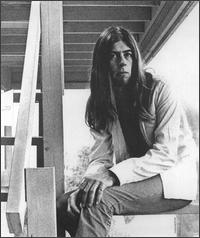
Ныне здравствующий Джон Мэйэлл, по праву называемый "отцом британского блюза", сочетает в себе таланты автора, мультиинструменталиста (гитара, клавишные, губная гармоника), а также бессменного лидера группы "Bluesbreakers". Образованная еще в 1963 г., группа существует и по сей день, причем на протяжении всего этого времени она всегда оставалась одним из самых влиятельных составов британского блюза, своего рода "законодателем мод". Объем настоящей статьи не позволяет подробно перечислить всех музыкантов, которые прошли через блюзовую школу Джона Мэйлла, однако есть те, кого просто нельзя не упомянуть: это Эрик Клэптон, Джон Макви (John McVee), Питер Грин (Peter Green), Мик Флитвуд (Mick Fleetwood), Энсли Данбар (Aynsley Dunbar), Мик Тейлор (Mick Taylor), Киф Хартли (Keef Hartley). Для всех этих музыкантов "Bluesbreakers" были своего рода трамплином к началу звездной карьеры в собственных проектах, которые зачастую были более коммерчески успешны, чем работа в группе Джона Мэйэлла. В апреле 1966 г. Мэйэлл записал альбом, ставший эталоном британского блюза - "Blues Breakers: John Mayall with Eric Clapton". Диск достиг 6-го места в британских национальных альбомных чартах, стены домов в Лондоне запестрели граффити "Клэптон – бог", после чего вместе с Джеком Брюсом и Джинджером Бейкером Клэптон образует первый супер-состав британского блюза – группу "Cream". Следующий альбом "Hard Road" (1967 г.) уже с гитаристом Питером Грином, достигший 10-го места в чартах популярности, только упрочил репутацию "Bluesbreakers", как лидера британского блюз-рока. На этот раз после такого успеха группу покидает Грин, чтобы образовать "Fleetwood Mac". Мэйэлл заменяет его новым молодым дарованием – Миком Тейлором, с которым записывает диск "Crusade" (1967 г.), оказавшийся в Британии на 8-ом месте в чартах.В чем крылся успех Мэйэлла и почему именно он является символом британского блюза? Помимо глубокого знания блюза Мэйэлл всегда оставался довольно жестким, даже авторитарным лидером. Импровизация музыкантов поощрялась и поддерживалась, но только в рамках заданного контекста. Большинство альбомов Мэйэлла – это концептуальные работы, причем каждый последующий отличается от предыдущего. Кроме того, "Bluesbreakers" никогда не были аккомпанирующим составом при лидере, это всегда была команда профессионалов самого высокого уровня. Диски Мэйлла могли нравиться или не нравиться как критикам, так и широкой публике, но чего в них никогда не было, так это поп-композиций. Это всегда был достаточно бескомпромиссный блюз – будь то гитарный блюз-рок 60-х или последовавшие за этим джазовые эксперименты, стилистическая направленность которых сформулирована в названии альбома 1972 г. "Jazz-Blues Fusion".
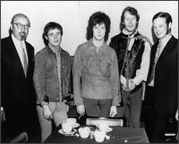
Просуществовав с 1966 г. по 1969 г., "Cream" внесли значительный вклад не только в развитие британского блюза, но и рок-музыки в целом. Ко времени образования группы все участники трио уже получили известность: Клэптон в "Yardbirds" и "Bluesbreakers" Джона Мэйэлла, Брюс и Бейкер в "Blues Inc." Алексиса Корнера, а потом в группе Грэма Бонда. Музыка "Cream" строилась на блюзовой основе, соединяя джазовые импровизации с элементами психоделического рока. Фактически, группа была родоначальником прогрессивного блюза, наивысшее развитие которого как музыкального жанра нашло свое выражение в творчестве Джимми Хендрикса (Jimmy Hendrix). "Cream" исполняли как авторский материал, так и значительно переработанные версии блюзовой классики, зачастую выходя далеко за рамки трехминутного формата. Кроме того, это была первая британская блюз-роковая группа, добившаяся серьезного успеха в США. Их выступления сопровождались повышенным ажиотажем, подогреваемым нездоровым интересом прессы. Каждый последующий диск продавался лучше предыдущего, такие альбомы группы, как "Disraeli Gears" (1967 г.) и двойной "Wheels Of Fire" (1968 г.), приобрели золотой и платиновый статус. Однако на фоне этой эйфории и все увеличивающихся гонораров и так непростые отношения между участниками группы стали все больше накаляться. Дело завершилось самороспуском "Cream" после прощального концерта в лондонском "Royall Albert Hall" в конце ноября 1969 г.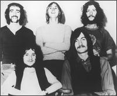
"Bluesbreakers" оказались "кузницей кадров" и для другой легенды британского блюза – "Fleetwood Mac". Эта группа была образована в 1967 г. гитаристом Питером Грином, басистом Джоном МакВи и ударником Миком Флитвудом. Грин ушел от Мэйэлла в мае месяце из-за творческих разногласий: Джон хотел расширить звучание "Bluesbreakers" за счет использования духовой секции, а Питер стремился играть ортодоксальный гитарный блюз. Впоследствии к группе присоединились еще два гитариста – Джереми Спенсер (Jeremy Spencer) и Дэнни Кирвэн (Danny Kirwan). Вышедший в начале 1968 г. дебютный альбом, озаглавленный "Peter’s Green Fleetwood Mac", произвел сенсацию и по сей день остается одним из лучших образцов британского блюза. Изначально группа делала ставку на достаточно жесткий гитарный саунд, исполняя как авторские композиции, так и кавер-версии послевоенной блюзовой классики, в первую очередь, Элмора Джеймса (Elmore James). Потом последовали новые альбомы, новые хит-синглы, среди которых нельзя не отметить принесшую впоследствии славу Карлосу Сантане (Carlos Santana) "Black Magic Woman" и инструментал "Albatross", международное признание, контракт с мейджор-лейблом, большие деньги и большие проблемы. Начиная с конца 1969 г. у Грина под влиянием употребления психоактивных веществ стремительно развивались личностные изменения: он терял контакт с окружающим миром, вдруг вспомнив о своей национальной принадлежности, резко ударился в иудаизм и в мае 1970 г. внезапно покинул группу. Не менее трагичный случай произошел и с Джереми Спенсером, когда во время американских гастролей "Fleetwood Mac" 1971 г. он оказался в секте Дети Бога, приняв новое имя, полностью отказавшись от своей прошлой жизни. Через несколько лет из-за проблем с хроническим алкоголизмом группу был вынужден покинуть и Кирвэн.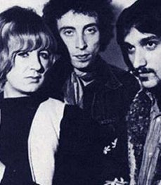
Ближайшими конкурентами "Fleetwood Mac" оказалась другая британская блюз-роковая группа "Chicken Shack". Организованная еще в 1965 г. гитаристом Стэном Уэббом (Stan Webb), группа была интересна тем, что в начале своего существования включала фактически двух лидеров и, соответственно, авторов исполнявшегося материала – самого Уэбба и певицу и пианистку Кристину Перфект (Christine Perfect). Что касается самого Уэбба, то его кумирами были Джон Ли Хукер, Бадди Гай (Buddy Guy), Фредди Кинг (Freddie King) и Би Би Кинг (B.B. King), чьи кавер-версии он активно исполнял и записывал. Вышедший в 1968 г. первый альбом группы, "Forty Blues Fingers", достиг 12-го места в британских альбомных чартах и справедливо считается лучшей пластинкой группы. Следующий диск "O.K. Ken?" (1969 г.) был откровенно слабее, однако из-за ажиотажа поклонников группы в чартах он попал на девятое место. В дальнейшем из-за творческих разногласий группу покидает Кристина Перфект, а Уэбб начинает экспериментировать со стилями исполняемой музыки, записав в 1970 г. хард-роковый альбом "Accept" (в честь которого впоследствии была названа знаменитая хэви-группа), на время полностью отказавшись от блюза.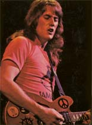
Организованная незаурядным гитаристом Элвином Ли (Alvin Lee), группа "Ten Years After" после успешных выступлений в лондонских клубах, а также на ежегодном Виндзорском джазовом и блюзовом фестивале выпустила в 1967 г. свой дебютный альбом, который хоть и не стал событием в мире музыки, однако четко продемонстрировал направление развития данного коллектива, состоящее в сочетании гитарного блюза и психоделического рока. Довольно быстро на группу обратил внимание известный американский продюсер Билли Грэм и пригласил их в гастрольное турне по Штатам. После выступлений в знаменитом "Филморе" и на фестивале в Вудстоке "Ten Years After" покорили американскую аудиторию. Необходимо отметить, что за всю семилетнюю историю своего существования группа была на гастролях в Америке около тридцати раз, оставаясь там исключительно востребованной. Виртуозная игра Элвина Ли и привлекательность исполнявшейся им музыки для молодежной аудитории быстро поставили его в ряд "героев гитары", наряду с Эриком Клэптоном и Джимми Хендриксом. Большинство записанных "Ten Years After" альбомов были коммерчески успешными и получили по итогам продаж золотой и платиновый статус. Однако считающиеся лучшими в дискографии группы альбомы "Ssssh" (1969 г.) и "A Space In Time" (1971 г.) выдержаны скорее в стилистике хард- и прогрессив-рока, чем блюза. Столкнувшись с творческим кризисом и общим спадом интереса к подобной музыке, группа распалась в первой половине 70-х гг.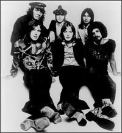
Другой британской блюз-роковой группой, получившей признание по обе стороны Атлантики были "Savoy Brown". Основанная в середине 60-х гитаристом Кимом Симмондсом (Kim Simmonds) и исполнителем на губной гармонике Джоном О’Лири (John O'Leary), первоначально группа включала как белых, так и черных музыкантов и была ориентирована на исполнение электрического блюза в чикагском стиле. Поскольку Симмондс не терпел рядом с собой других лидеров, состав исполнителей постоянно менялся. Среди многих музыкантов, прошедших в конце 60-х через ряды "Savoy Broun", стоит отметить Боба Холла (Bob Hall), Стива Хаккета (Steve Hackett), Боба Браннинга (Bob Brunning) и Хьюги Флинта (Hughie Flint). Группа достаточно много экспериментировала с саундом на студийных альбомах, то добавляя джазовую духовую секцию, то включая миниатюры в стиле классической гитары. Однако в целом "Savoy Broun" пошли по пути исполнения утяжеленного буги-блюза, причем основная аудитория группы оказалась как раз в Америке, где их диски продавались значительно лучше, чем в Британии. Наибольший коммерческий успех группе принесли альбомы "Lookin’ In" (1970 г.) и "Street Corner Talking" (1971 г.).Проанализировать творчество всех групп и исполнителей британского блюза 60-х в рамках данной статьи не представляется возможным. Но ряд имен необходимо хотя бы обозначить. Это группы "Black Cat Bones", "Brunning Sunflower Blues Band", "Climax Chicago Blues Band", "Downliners Sect" "John Dummer Blues Band", "Aynsley Dunbar Retaliation", "Juicy Lucy", "Killing Floor", "Tramp"; исполнители Дастер Беннетт (Duster Bennett), Дэйв Келли (Dave Kelly), Топ Топхэм (Top Topham), Кристина Перфект, Джо-Энн Келли (Jo Ann Kelly) и ряд других.
Что касается 70-х гг., то это было не лучшее время для британского блюза. Как и всякая мода, интерес к блюзу начал постепенно сходить на нет. Начало десятилетия знаменуется расцветом хард-рока, в первую очередь, выразившегося в творчестве таких титанов, как "Led Zeppelin", "Deep Purple", "Grand Funk Railroad", чья музыка в той или иной мере имела блюз-роковую основу. Однако уже к середине 70-х под прессингом шоу-бизнеса вкусы массовой аудитории изменились, сначала в направлении стадионного глэм-рока, а потом диско и панка, справедливо называемых в ряде источников "анти-роком". На этом фоне большинство британских блюзовых групп или распались, или переключились на исполнение другой музыки. Однако на творчестве двух выдающихся блюзовых исполнителей, пик активности которых пришелся как раз на 70-е, нельзя не остановиться – это Тони МакФи (Tony McPhee) и Рори Гэллахер (Rory Gallagher).
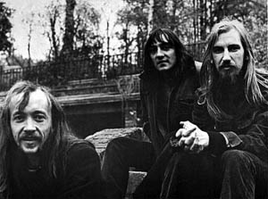
Гитарист-виртуоз Тони МакФи собрал первый состав "Groundhogs" еще в начале 60-х гг. Группа была ориентирована на исполнение традиционного блюза и из-за выдающегося таланта МакФи приобрела определенное реноме в кругах профессионалов. Достаточно сказать, что в 1964 г. их сингл вышел на родине блюза – в США и удостоился благожелательных отзывов критики. В том же году группа аккомпанировала на британских гастролях знаменитого Джона Ли Хукера, причем ему так понравилось их исполнение, что Хукер пригласил группу МакФи участвовать в записи его британского диска в 1965 г. Однако не найдя поддержки широкой аудитории "Groundhogs" распадаются. МакФи как сессионный гитарист записывается с такими звездами американского блюза, как Эдди Бойд (Eddie Boyd) и "Чемпион" Джек Дюпри (Champion Jack Dupree). Ненадолго он присоединяется к блюз-бэнду Джона Даммера (John Dummer), однако желание играть собственную музыку, в конце концов, заставляет МакФи в 1968 г. собрать "Groundhogs" в новом составе. Ныне считающиеся классикой, первые два альбома группы в то время прошли практически незамеченными. Зато записанный в начале 1970 г. "Thank Christ For The Bomb" поднялся до 9-го места в британских альбомных чартах и продержался там почти три месяца. По сравнению с предыдущими работами группы, этот диск демонстрировал значительное утяжеление саунда и усложнение структуры исполнявшихся композиций. Группа неожиданно вышла в один ряд с корифеями хард-рока.Еще большего успеха достиг следующий альбом "Split" (1971 г.), оказавшийся на 5-ом месте в чартах и явивший вершину творческого развития группы. Большинство его композиций впоследствии неизменно входили в концертную программу "Groundhogs". Основная часть диска демонстрировала прогрессивный хард-рок на блюзовой основе, сыгранный с редкой страстью и мастерством исполнения. Следующий диск оказался еще более экспериментальным: на нем МакФи помимо гитары активно использовал меллотрон, пойдя на синтез казалось бы несовместимых жанров – блюза и арт-рока. Изданный в 1972г., "Who Will Save The World? The Mighty Groundhogs!" достиг восьмого места в чартах популярности, хотя сам МакФи и не считал его особо успешной работой. После этого последовал выпуск еще двух интересных альбомов с группой, характеризующихся синтезом блюза и прогрессив-рока, а также выход первого сольного диска МакФи. Однако спад интереса к блюзу вынудил МакФи вскоре распустить "Groundhogs". Потом группа периодически возрождалась, однако достичь былого успеха ей не удавалось. Что касается их творчества 1980 – 90-х гг., то это был скорее сильно утяжеленный буги-блюз, заставивший ряд критиков упрекнуть группу, что она стала играть хэви-металл. Наряду с этим МакФи сделал ряд сольных акустических записей, демонстрируя виртуозную технику слайда.
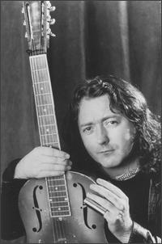
Ирландский гитарист Рори Гэллахер на протяжении 70-х оставался одним из немногих музыкантов, исполнявших бескомпромиссный блюз-рок. Несмотря на то, что в 1972 г. журнал "Melody Maker" признал его лучшим рок-гитаристом, Гэллахер никогда не изображал из себя супер-звезду и неизменно оставался душевным и приятным в общении человеком, что отмечают многие его современники. Исполнявшийся им утяжеленный блюз-рок или акустический фолк-блюз неизменно трогали сердца слушателей своей теплотой и искренностью исполнения. Первый большой успех пришел к нему в конце 60-х, когда Гэллахер организовал трио "Taste". Группа исполняла прогрессивный блюз с элементами джазовой импровизации и, в целом, следуя традиции "Cream". Вышедший в январе 1970 г. второй альбом группы "On The Boards" достиг 18-го места в британских чартах и позволил критикам причислить группу к иконам белого блюза. Последовавший коммерческий успех и выдвижение Гэллахера как явного лидера привели к разногласиям внутри группы и ее закономерному распаду. Однако Гэллахер быстро собирает себе аккомпанирующий состав и, заняв денег у своей матери, зимой 1970 г. записывает свой первый сольный альбом, целиком состоящий из авторского материала. Вдохновленный хорошими продажами и восторженными отзывами в британской прессе Гэллахер продолжает выступать и записываться сольно. Пик его активности приходится именно на 70-е гг., когда им было выпущено десять альбомов, из которых наибольшего успеха достигли "Live In Europe" (1972 г., 9-е место в британских чартах) и "Blueprint" (1973 г., 12-е место).Дальнейшего развития блюза в Великобритании не последовало. Связанное с творчеством и преждевременной трагической смертью незаурядного американского блюз-рокового гитариста Стива Рэя Воэна возрождение интереса к блюзу в конце 80-х гг., было скорее заокеанским явлением. К слову сказать, целый ряд британских блюзменов к этому времени уже переехали в США, не находя у себя на родине подходящей аудитории. Появление ярких новых групп и исполнителей, способных затмить славу "Bluesbreakers" или "Fleetwood Mac" эпохи Питера Грина в Британии не намечается. В этом отношении показателен состав музыкантов на мемориальном концерте, проведенном в 1995 г. в память о скончавшемся от рака 1 января 1984 г. Алексисе Корнере. Среди основных участников были ветераны: Джек Брюс, Дик Хексталь-Смит, Пол Джонс (Paul Jones), Тони МакФи, Зут Мани (Zoot Money), Мик Абрахамс (Mick Abrahams). Высокопрофессиональные блюзовые альбомы до сих пор выпускают Джон Мэйэлл, Эрик Клэптон, Питер Грин, Гарри Мур (Gary Moore)… Однако музыкальных откровений на них не содержится. Это работы, рассчитанные, в первую очередь, на давних поклонников, не затрагивающие интересы широкой аудитории. В сущности, британский блюз разделил судьбу рок-музыки, частью которой он и являлся, утратив массовую популярность и в лучших своих проявлениях став скорее элитарным искусством.